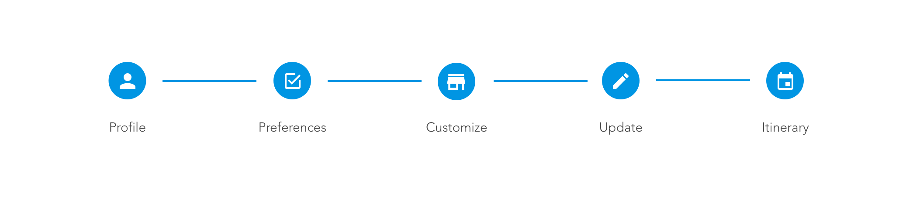

<div class="welcome-img">
  
</div>

<div class="showGenerateItinerary">
<h1 class="welcomePage">Generate an Itinerary</h1>


<div class="preferencesInput">
  <p>How much time do you have?</p>
  <select name="time" ng-model="userTime">
    <option value="fewHours">Few Hours</option>
    <option value="halfDay">Half Day</option>
    <option value="fullDay">Full Day</option>
  </select>
</div>

<div class="preferencesInput">
<button class="needleBtn" ng-click="generateItinerary()" style="margin-top:10px;">Submit</a></button>
</div>

</div>

<!-- <h3 class="itinerary">COMFORT</h3>
<h4 class="itinerary">This option will generate an itinerary <br> based on places you have been and know you will enjoy</h4>
<div class=itinerarybtn>
<button>Comfort</button>
</div>

<h3 class="itinerary">TRY SOMETHING NEW</h3>
<h4 class="itinerary"> This will generate a day based on places you are excite to try!</h4>
<div class=itinerarybtn>
<button>Try Something New</button>
</div>

<h3 class="itinerary">TRUST</h3>
<h4 class="itinerary"> This will generate a day with both places you know mixed with places you have never been before. <br>You can <i>trust</i> that it will be a great day!</h4>
<div class=itinerarybtn>
<button>Try Something New</button>
</div> -->
